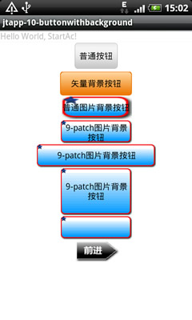

制作自定义背景Button按钮、自定义形状Button的全攻略
在Android开发应用中，默认的Button是由系统渲染和管理大小的。而我们看到的成功的移动应用，都是有着酷炫的外观和使用体验的。因此，我们在开发产品的时候，需要对默认按钮进行美化。在本篇里，笔者结合在应用开发中的经验，探讨一下自定义背景的按钮、自定义形状按钮的实现方法。
首先看实现效果截图：

自定义背景的按钮目前有2种方式实现，矢量和位图。
1. 矢量图形绘制的方式
矢量图形绘制的方式实现简单，适合对于按钮形状和图案要求不高的场合。步骤如下：
(a) 使用xml定义一个圆角矩形，外围轮廓线实线、内填充渐变色，xml代码如下。
//bg_alibuybutton_default.xml<?xml version="1.0" encoding="utf-8"?>
<layer-list xmlns:android="http://schemas.android.com/apk/res/android">
<item>
<shape android:shape="rectangle">
<solid android:color="FFEC7600" />
<corners
android:topLeftRadius="5dip"
android:topRightRadius="5dip"
android:bottomLeftRadius="5dip"
android:bottomRightRadius="5dip" />
</shape>
</item>
<item android:top="1px" android:bottom="1px" android:left="1px" android:right="1px">
<shape>
<gradient
android:startColor="FFEC7600" android:endColor="FFFED69E"
android:type="linear" android:angle="90"
android:centerX="0.5" android:centerY="0.5" />
<corners
android:topLeftRadius="5dip"
android:topRightRadius="5dip"
android:bottomLeftRadius="5dip"
android:bottomRightRadius="5dip" />
</shape>
</item>
</layer-list>
同样定义bg_alibuybutton_pressed.xml和bg_alibuybutton_selected.xml，内容相同，就是渐变颜色不同，用于按钮按下后的背景变化效果。
(b) 定义按钮按下后的效果变化描述文件drawable/bg_alibuybutton.xml，代码如下。
<?xml version="1.0" encoding="UTF-8"?><selector xmlns:android="http://schemas.android.com/apk/res/android">
<item android:state_pressed="true"
android:drawable="@drawable/bg_alibuybutton_pressed" />
<item android:state_focused="true"
android:drawable="@drawable/bg_alibuybutton_selected" />
<item android:drawable="@drawable/bg_alibuybutton_default" />
</selector>
(c) 在你需要的界面定义文件中，如layout/main.xml中定义一个Button控件。
<Buttonandroid:layout_width="120dip"
android:layout_height="40dip"
android:text="矢量背景按钮"
android:background="@drawable/bg_alibuybutton" />
这样，自定义背景的按钮就可以使用了，在实现onClick方法后就可以响应操作。
2.9-patch图片背景方式
此种方法相对复杂繁琐，但可以制作出更多、更复杂样式的按钮图样。
什么是9-patch格式呢？
9-patch格式，是在Android中特有的一种PNG图片格式，以"***.9.png"结尾。此种格式的图片定义了可以伸缩拉伸的区域和文字显示区域，这样，就可以在Android开发中对非矢量图进行拉伸而仍然保持美观。如果使用位图而没有经过9-patch处理的话，效果就会想第一张截图中的“普通图片背景按钮”那样被无情的拉伸，影响效果。Android中大量用了这种技术，默认的按钮的背景就是用了类似的方法实现的。我们看一下google官方的描述：

该格式相对于一般PNG图片来说，多了上下左右各一条1px的黑线。左、上黑线隔开了9个格子，当中一个格子(见上图Strechable Area区域)声明为可以进行拉伸。右、下两条黑线所定义的Paddingbox区域是在该图片当做背景时，能够在图片上填写文字的区域。每条黑线都是可以不连续的，这样就可以定义出很多自动拉伸的规格。Android sdk中提供了设置的工具，启动命令位于：$ANDROID_SDK/tools/draw9patch.bat，使用它对于原始PNG进行设置9-patch格式，非常方便，如下图：


draw9patch工具的右侧是能够看到各方向拉伸后的效果图，你所要做的就是在图上最外侧一圈1px宽的像素上涂黑线。
注意，在draw9patch.bat第一次运行时，sdk2.2版本上会报错：java.lang.NoClassDefFoundError:org/jdesktop/swingworker/SwingWorker。需要下载swing-worker-1.1.jar，放入$android_sdk/tools/lib路径下，成功运行。
此种方法实现的步骤如下。
(a) 使用draw9patch.bat作完图片后，得到两张按钮背景，分别是正常和按下状态下的，命名为bg_btn.9.png和bg_btn_2.9.png。
(b) 编写图片使用描述文件bg_9patchbutton.xml。
// in bg_9patchbutton.xml<?xml version="1.0" encoding="UTF-8"?>
<selector xmlns:android="http://schemas.android.com/apk/res/android">
<item android:state_pressed="true"
android:drawable="@drawable/bg_btn_2" />
<item android:state_focused="true"
android:drawable="@drawable/bg_btn_2" />
<item android:drawable="@drawable/bg_btn" />
</selector>
(c) 在界面定义文件 layout/main.xml中添加Button、ImageButton按钮控件的定义。Button、ImageButton都是可以使用背景属性的。
<Buttonandroid:layout_width="120dip"
android:layout_height="40dip"
android:text="9-patch?????????"
android:background="@drawable/bg_9patchbutton" />
<Button
android:layout_width="200dip"
android:layout_height="40dip"
android:text="9-patch?????????"
android:background="@drawable/bg_9patchbutton" />
<Button
android:layout_width="120dip"
android:layout_height="80dip"
android:text="9-patch?????????"
android:background="@drawable/bg_9patchbutton" />
<ImageButton
android:layout_width="120dip"
android:layout_height="40dip"
android:src="@drawable/bg_9patchbutton"
android:scaleType="fitXY"
android:background="@android:color/transparent" />
以上2种实现按钮的美化，都是标准的矩形按钮为基础。在一些应用中我们可以看到漂亮的自定义形状的异形按钮，这是怎么实现的呢？经过一番研究和实践，找出了一种方便的方法，就是使用ImageButton加上9-patch就可以实现漂亮的自动延伸效果。
3. 自定义形状、颜色、图样的按钮的实现
步骤如下。
(a) 设计一张自定义形状风格背景的图片，如下图。
(b) 未点击和按下后的状态各做一张，形成一套图片，如下图。
forward.png
forward2.png
(c) 创建和编写按钮不同状态的图片使用描述文件drawable/ib_forward.xml
// ib_forward.xml<?xml version="1.0" encoding="UTF-8"?>
<selector xmlns:android="http://schemas.android.com/apk/res/android">
<item android:state_pressed="true"
android:drawable="@drawable/forward2" />
<item android:state_focused="true"
android:drawable="@drawable/forward2" />
<item android:drawable="@drawable/forward" />
</selector>
(d) 在界面定义文件 layout/main.xml中添加ImageButton按钮控件的定义。
// in layout/main.xml<ImageButton
android:layout_width="80dip"
android:layout_height="40dip"
android:src="@drawable/ib_forword"
android:scaleType="fitXY"
android:background="@android:color/transparent" />